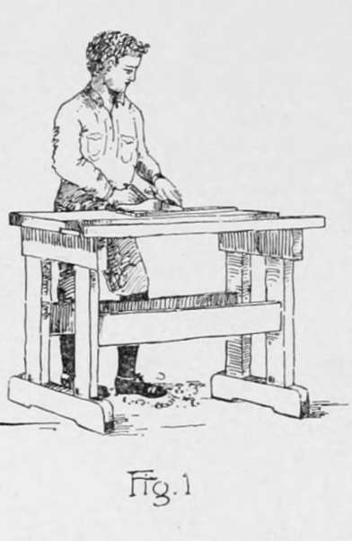
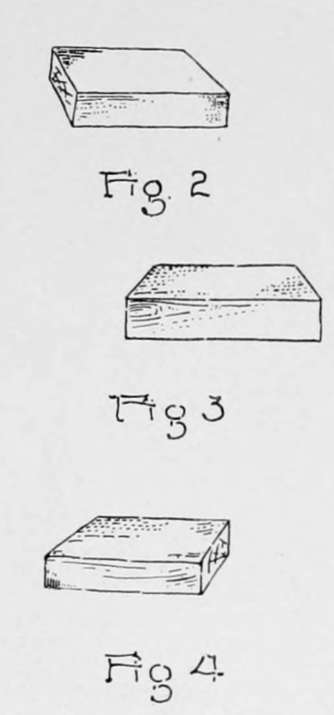
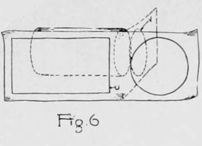
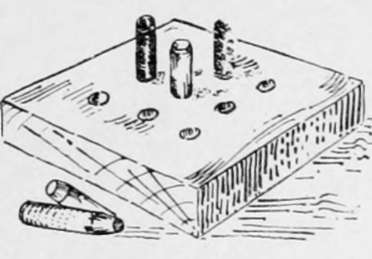

Chapter I. Introduction
Description
This section is from the book "Beginning Woodwork At Home And In School", by Clinton Sheldon Van Deusen. Also available from Amazon: Beginning Woodwork At Home And In School.
Chapter I. Introduction
Shop
Before beginning the work outlined in this book it will be necessary to have what we will call a shop in which to do the work. This may be quite an elaborate building, but necessity demands only a few square feet of floor space for the work, and even if this be in the corner of a room used for some other purpose, it need not prevent the doing of excellent work. It is desirable that the shop be well lighted and ventilated, and if it is possible to have light from only one direction, it is best to have it come from the left end of the bench.
Bench
A bench with a vise is necessary for supporting the work, and while it is possible to use a crude home-made bench and vise, a bench such as is used in manual-training shops (Fig. 1) is more desirable. These can now be purchased at a reasonable price, and with careful treatment will last a lifetime. When their permanent value is considered, the first cost is a wise investment. The bench should be fastened to the floor by two lag-screws passing through the middle of the foot-pieces.
Vise
A good vise is a very important item; a cheap one, that might last under the careful treatment of an experienced workman, will not withstand the treatment of a beginner. A good rule to follow in using a vise is to see how loose a piece can be clamped and still be held in place. This method is better for both the vise and the work, as tight clamping may injure the vise and is also liable to mar the work. Vises are made of either wood or metal and consist of two jaws which are opened and closed by a wooden or iron screw, turned by a handle that passes through an eye in the outer end of the screw. A modern invention known as a rapid-acting vise, Fig. 18, consists of the same essential parts, but by bringing the handle to a vertical position the outer jaw may be moved away from the inner jaw far enough to admit the piece which is to be held, and then, by turning the handle to the right, the outer jaw is moved toward the inner and the piece is fastened securely in the vise. It should be remembered that a vise is a machine, and therefore the metal parts that rub together should be lubricated occasionally with a little oil, or in case a vise with a wooden screw is used, a little melted beeswax rubbed on the screw will cause it to work more freely.
Tools
A good workman learns to feel toward and care for his tools as if they were his pets, and it should be the purpose of the beginner to give so much care to his tools that they will have no opportunity to drop from the bench or come in contact with metal objects, such as parts of the vise, bench stop, etc. Some offer as an objection to a metal vise that tools are liable to become injured by coming in contact with it, but care on the part of the worker will prevent such an accident. A place should be provided for each tool and it should be kept in that place when not in use. If tools are not to be used for a month or more, the bright steel surfaces should be coated with vaseline to prevent their rusting. When a tool becomes dull do not delay sharpening it, as more time is lost in using a dull tool than is required to sharpen it. The method used in sharpening chisels and plane irons is explained in the Appendix. A workman should acquire ability to keep these tools in good condition. The sharpening of saws is not considered within the province of this book, but do not work with a dull one; have it sharpened by some one who knows how. One more rule should be enforced and that is to have a barrel, box or bag in which to keep shavings, and to regularly clean up the shop.
A list of the tools necessary in doing the work outlined in this book may be found in the Appendix, page 97.
Material
One must work with each particular kind of lumber in order to acquire a knowledge of its qualities. For this reason, it is proposed to use six varieties of lumber in the problems described in this book. Each is especially suited to the problem in which it is used. Other kinds might be substituted, but not without sacrificing some of the advantages of the work. Lumber to be in good condition for working should be well seasoned; that is, a large part of the sap that was in the wood when the tree was standing should be removed.
Seasoned lumber will absorb moisture if kept in a damp place; therefore it is best to keep it in a dry place. If the entire amount listed in the Appendix (page 98) is purchased at one time, it is advisable to pile it in layers with an air space between the pieces and with adjacent layers extending at right angles to each other. If piled in the reverse order from the list given, each piece may be removed from the top of the pile as needed.
A box should be provided in which to keep nails, screws, etc., and at no time should they be left loose on the bench or in other places where tools might be brought in contact with them and thus become injured.
A list of the material necessary in carrying out the work outlined is given in the Appendix, page 98.
Working Drawings
It is as important that a workman should understand working drawings as it is that a correspondent should understand the language of a letter he has received. A brief explanation will give some of the underlying principles of working drawings:
If the first piece mentioned in the list of lumber be laid on a table it might appear as in either Fig. 2, :? or 4, depending on the position taken by the observer. On account of this variation in the appearance of the same object from different viewpoints, this method is not very satisfactory for conveying definite imformation in regard to any piece that is to be made, and therefore a plan that is quite different in many respects is in use. Now consider the same piece with a piece of paper folded as in Fig. 5, so as to form a vertical plane in front of the piece and a horizontal plane above it. A rectangle might now be drawn on the vertical plane as shown at S, Fig. 5, the sides of which will be directly in front of the edges of the piece that is back of the plane. This rectangle would be known as the front view of the piece. In a similar manner a rectangle might be drawn as shown by short dash lines at T, Fig. 5, on the horizontal plane, of such a size and in such a position that its sides would be directly over the edges of the piece. This rectangle is known as the top view of the piece, and if the horizontal part of the paper should now be brought into a vertical position and dimensions added' we would have what is known as the working drawing of this piece. It shows to the workman definitely the form and size of the piece and is typical of a large class of working drawings in which only the top and front views of the piece are shown.
Now if one should make a working drawing, in the manner explained above, of a cylinder having its axis horizontal and parallel to the front, he would find that the drawing would not convev a complete and correct idea of the form of the cylinder and some other method must be resorted to. In this case it is desirable to consider the paper folded as in Fig. 6, so as to form two vertical planes, one in front of the object and the other extending back and at right angles to the front plane. The front view is a rectangle (U, Fig. 6) on the front plane, whose sides are directly in front of the edges and of the upper and dimensions are omitted in Fig. 5 for simplicity but the method of placing them may be seen in Fig. 7. lower limits of the cylinder. On the vertical plane at the side a circle might be drawn as shown by short dash lines at V, Fig. 6, that would be directly in line with the edges of the cylinder. This would be called the side view, and when this part of the paper is brought again in line with the paper in front of the cylinder, and dimensions placed on it, we have a working drawing which is typical of another large class of drawings in which only the front and side views are shown. In making working drawings, edges or limits of objects obscured from view by parts of the object itself are shown by lines made up of short dashes. Thus the fact that the holes go entirely through the game board is shown by the dash lines on the front view in Fig. 7.
A method frequently employed in working drawings is what is known as taking a section and if its use is understood the drawing is usually clearer. This method consists in imagining a part or all of an object cut by an assumed plane and the parts thus cut exposed to view. To indicate the surface of a piece or pieces that are cut by such a plane, uniformly spaced slanting lines are drawn across the part supposed to be cut. When more than one piece is cut, the lines in adjacent pieces slant in different directions. The use of sections is illustrated in Fig. 41 where an imaginary cut made through the middle of the coat hanger shows its form without the necessity of showing the end view.
Another method frequently resorted to in making working drawings is to imagine a part of the object cut away so as to expose parts that are in reality covered. This frequently allows the details of the construction to be shown more clearly than would otherwise be possible. In the working drawing of the taboret (Fig. 74), this method is used, a portion of the top being removed to show the form and method of joining the legs and braces below.
Frequently it is not convient to make drawings the full size of the object represented and in such cases the drawings are made to scale; that is, they are made one-half, one-fourth, or some other definite part of the full size.

Continue to: